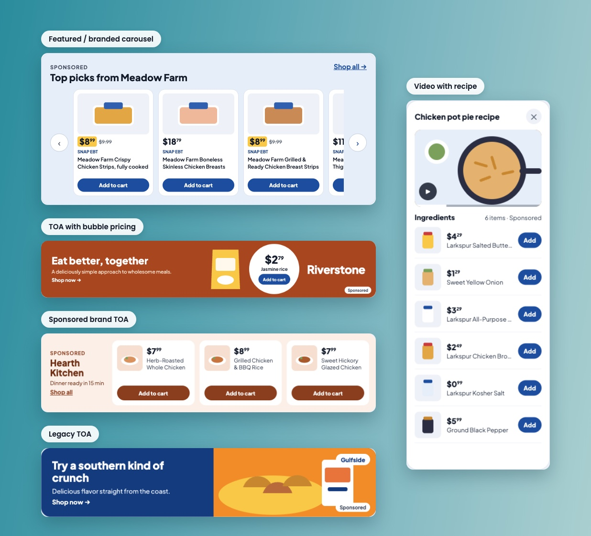
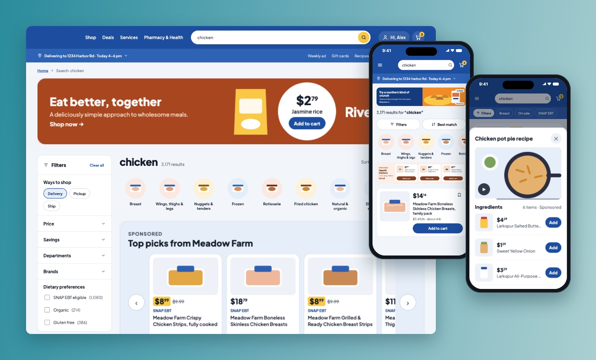
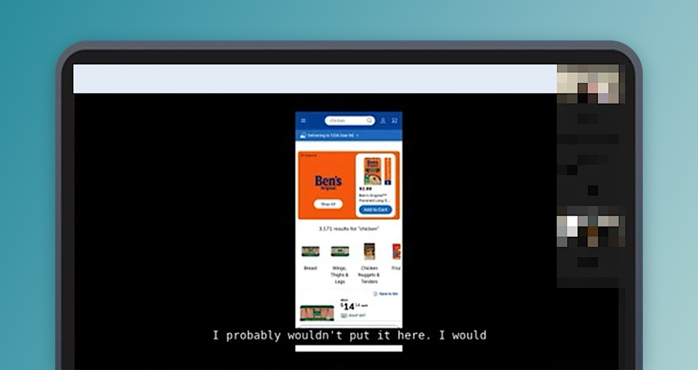
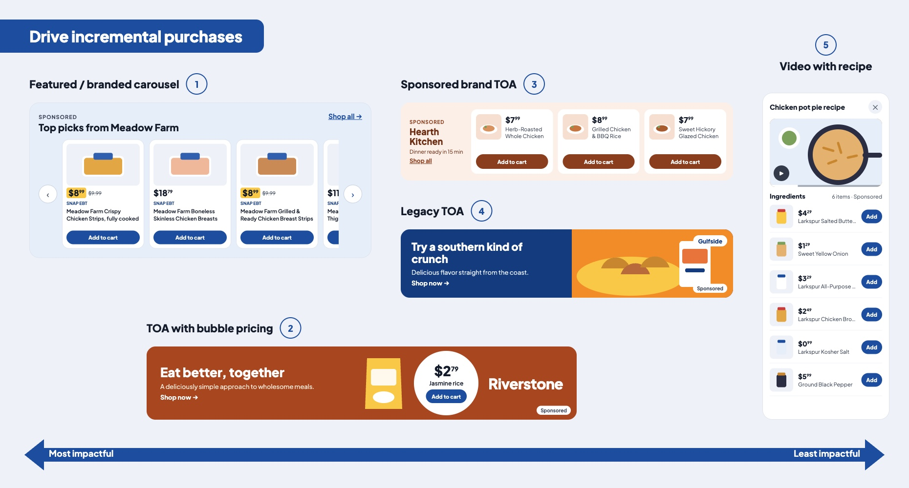

Kroger case study
Onsite Ad Innovation Research & User Testing

Illustrative recreation. The original designs are confidential.
- Company
- Kroger
- Period
- 2024
- My role
- Lead Product Designer — Research & User Testing
- Platform
- Web Desktop & App
Overview
I prototyped new ad types and tested them with Kroger shoppers and the brands that advertise on Kroger, to learn what to build next, and how and where. The findings put sponsored carousels first; they're now live.
The opportunity
The monetisation team wanted to offer brands new ad types. Before building them, we needed to know if they would work for both sides: the brands (CPGs) who pay for campaigns, and the shoppers who see them. Both share one goal: adding products to the cart.
We started from what we already knew: shoppers visit about twice a week and spend only 34 seconds on each page.
The impact
One shared direction for shoppers and brands: make adding to cart easy.
Impact
The findings put sponsored carousels first. They're now live on Kroger, with a huge impact.
See the Sponsored Products case study →My role
Lead product designer, from new ad types to research and roadmap.
- I created the research plan for both audiences: the shopper survey, the moderated interviews and the brand survey.
- I designed the new ad types and built the desktop and app prototypes we tested.
- I partnered with the research team, who supported with the interview guide and questions and moderated the interviews.
- I presented the findings to the main stakeholders and managers.

Illustrative recreation. The original designs are confidential.
The study I led
Two audiences, three methods.
- Shopper survey: 100 Kroger shoppers. 76% shop at Kroger once a week, 24% once a month.
- Moderated interviews: 5 frequent Kroger shoppers who often engage with ads, using desktop and app prototypes to start the conversation.
- Brand survey: 40 brands (CPGs) rated upcoming ad types against their campaign objectives.

…it wouldn't be as interesting unless it was a little bit further down, I think, because I'd already have something I was searching for in mind.Shopper Moderated interview
Key insight
Shoppers were less concerned with the ad type and more with the products, and with how easy the ad was to act on.
What I learned
Shoppers want to finish their task. Brands want more purchases.
- Shoppers are focused on the task. 60–72% only wanted to see products related to their search. They were open to other items once they had found what they came for.
- Inspiration works when it saves effort. Shoppers welcomed ideas that make planning the weekly menu easier, especially when the ad explains why they're seeing it.
- Price, image and savings drive the decision. Sending shoppers away from the page added effort. Videos showing how to use a product were valued.
- Brands want incremental purchases. Brand awareness and new shoppers matter, but driving more purchases and units came first. Branded carousels and banners with bubble pricing ranked highest.

Illustrative recreation. The original designs are confidential.
What changed
"Make add to carts easy."
Combining both sides gave the team three principles: capture attention by helping shoppers finish their task, reduce the clicks between seeing an ad and adding to cart, and improve targeting so inspiration feels relevant.
We presented the findings to the main stakeholders and managers. Sponsored carousels went first and are now live; bubble pricing and targeting tests were next on the roadmap.